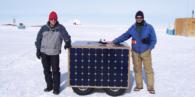

Our task, since the fall of 2003, has been the development of a
mobile scientific platform for the harsh conditions of the
Antarctic plateau. This research project has combined the
efforts of undergraduates, international students, graduate
research students, the Thayer School Faculty, as well as
collaborated with the Army's Cold Regions Research and
Engineering Laboratories (CRREL), here in Hanover, N.H.
The immediate goal of our research is the deployment of a working prototype to the Antarctic. The finished product is designed to navigate over 1000 km autonomously, using the abundant solar energy of the Antarctic summer to power its way over the plateau from the South Pole, where even summer temperatures hover between -40 and -20 C. The long term goal is the development of a scalable, low-cost (<$20,000), semi-autonomous science platform for the creation of distributed sensor networks across the Antarctic. |
||||
March 11, 2013 Yeti Surveys Warren CaveAfter some debugging and testing, we performed some autonomous GPR surveys at Warren Cave. Warren is one of several fumoralic ice caves that Mt. Erebus scientists enter to measure temperature, gas concentrations, and morphology. Our LiDAR team, Jed and Drea, went into Warren Cave a few weeks ago to perform green LiDAR scans of Warren's interior. I was lucky enough to accompany them and help out when I could.
In order to enter the cave, we had to anchor ourselves to stakes driven into the rock in case the cave ceiling collapsed under our weight.
Yeti did pretty well on the snow over Warren, except for some icy patches here and there. We set up a mountain tent as a staging area for Yeti's electronics, including a large DC car battery, an inverter, an extra GPR, extra laptop batteries, and extra Ultralife batteries.
|
||||
| See more of GPR Robot Building blog |


| [Main] | [Mission] | [Science] | [Papers] | [Pictures] | [Team] |
|
This research is supported by The National Science Foundation, grant #OPP-0343328 Site © Thayer School of Engineering, Dartmouth College, Hanover, N.H. |